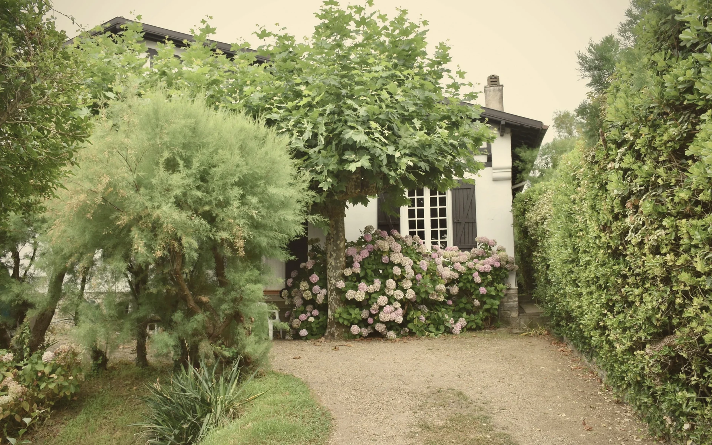
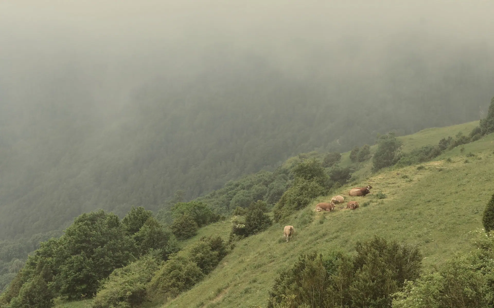
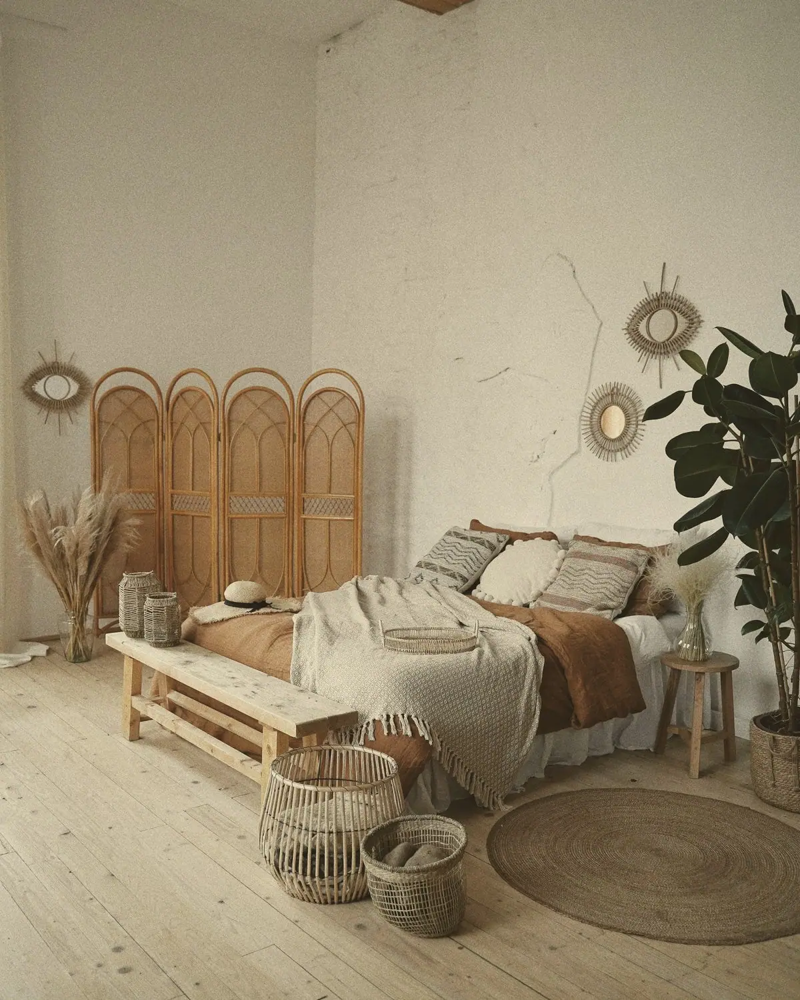
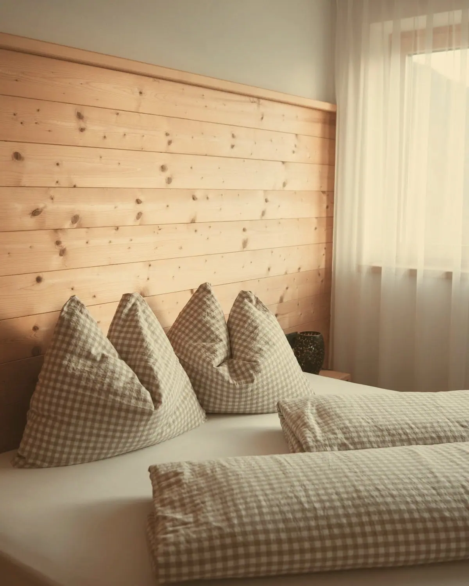
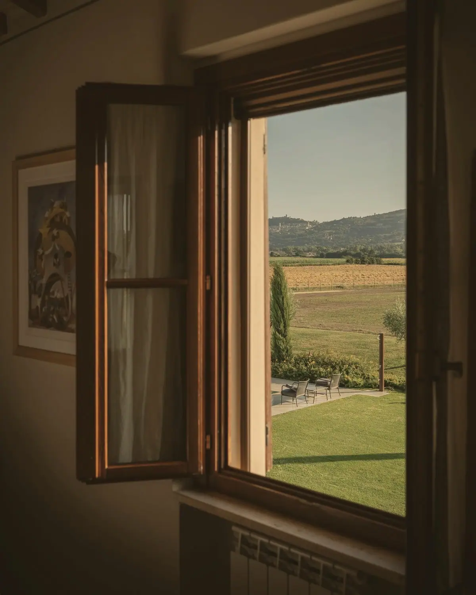
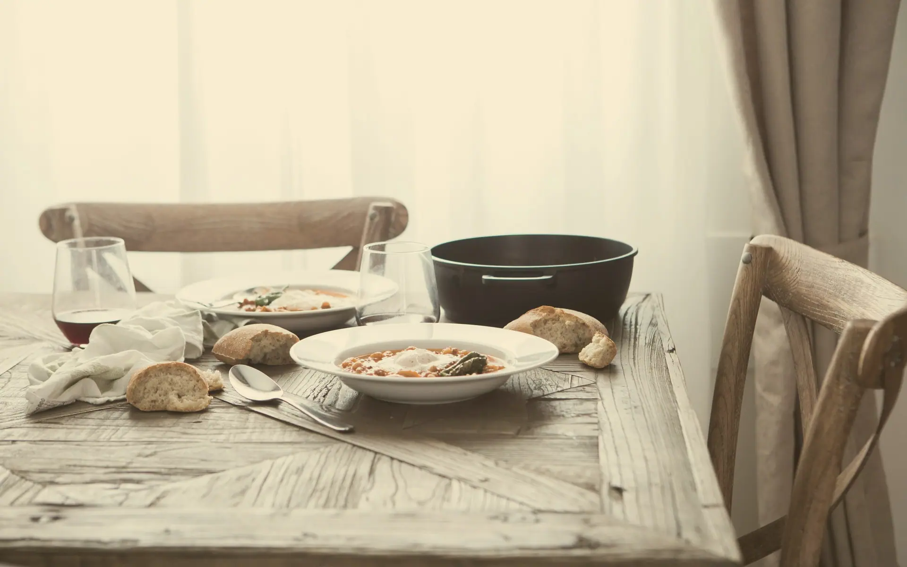
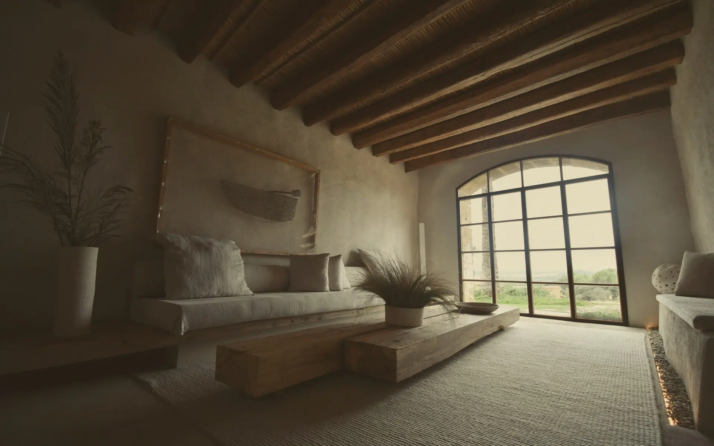
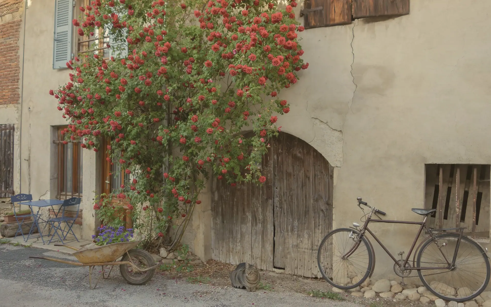
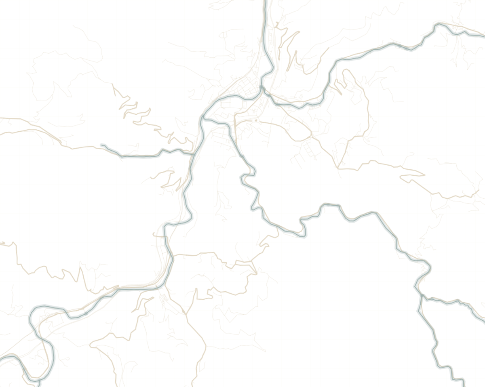

EZKI LANDETXEA
ALTZO, GIPUZKOA
Casa rural en Altzo, junto a Tolosa
Ver más
La casa
Un caserío con tres habitaciones, cocina para todos y un prado delante. Tolosa está abajo, a diez minutos en coche.
Habitaciones
Tres habitaciones dobles, cada una con su baño. Si venís en grupo, se alquila la casa entera.
-

GANBARA
La más grande, con suelo de madera.
Cama de 160 y baño con ducha.
Desde 85 € la noche para dos personas.
-

PAGOA
Cabecero de madera y ventana al prado.
Cama de 150 y baño con ducha.
Desde 75 € la noche para dos personas.
-

HARITZA
La ventana grande da al valle.
Cama de 180 y baño con bañera.
Desde 80 € la noche para dos personas.

Noches libres
Elige en el calendario el día que llegas y el día que te vas. Los días con una raya ya están cogidos.

Precios
Precio por noche para dos personas. Reservando aquí no pagas comisión a ningún portal.
De septiembre a junio
- GANBARA – 85 €
- PAGOA – 75 €
- HARITZA – 80 €
- CASA ENTERA – 220 €
Julio y agosto
- GANBARA – 105 €
- PAGOA – 95 €
- HARITZA – 100 €
- CASA ENTERA – 280 €
En julio y agosto, mínimo dos noches.

Qué hacer cerca
Lo que recomendamos a quien viene, a menos de una hora en coche.
- – Subir al Txindoki desde Larraitz 25 min en coche
- – La vía verde del Leitzaran, a pie o en bici 20 min en coche
- – El mercado del sábado en Tolosa 10 min en coche
- – La playa de Zarautz 35 min en coche
- – El museo de títeres de Tolosa 10 min en coche
- – El museo de la confitería Gorrotxategi, en Tolosa 10 min en coche
- – Una sidrería en Astigarraga, de enero a abril 30 min en coche
- – El Aquarium de Donostia 35 min en coche
Contacto
Ezki baserria, Altzo
20268 Altzo, Gipuzkoa
Teléfono 943 00 00 00
WhatsApp 600 00 00 00
La entrada es a partir de las 16:00. La salida, hasta las 12:00.
